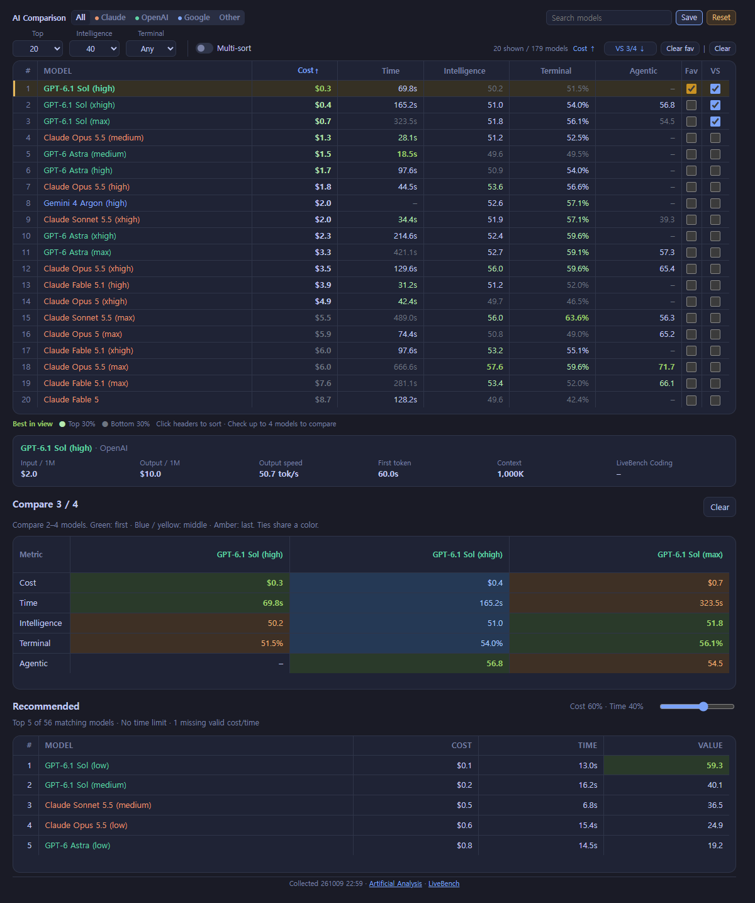
ai-analysis
SOURCEAI 모델의 성능·코딩 점수·응답 시간·비용을 비교하는 로컬 브라우저 리포트. 필터와 즐겨찾기로 모델 선택을 돕습니다.
한화에너지 GEP 개발팀에서 발전소 데이터 연동 업무를 담당하며 HEIS 플랫폼의 TAG 관리·QC 검증·Backfill·OPC 연동 업무 전반을 자동화 툴로 전환했습니다. Report 수동 취합 프로세스를 자동화해 해외 발전소 사이트 운영 효율을 개선했고, HEIS–SCADA 연동 QC 검증 체계를 확립했습니다.
PRISM ERP 플랫폼을 설계부터 배포까지 직접 개발하고 있습니다. React·TypeScript 프론트엔드와 Python·FastAPI 백엔드, PostgreSQL 데이터베이스를 연결해 협업과 운영 업무가 이어지는 풀스택 플랫폼을 만듭니다.
7 projects · updated 2026-10-10 · All repositories ↗
전체 프로젝트 7개

AI 모델의 성능·코딩 점수·응답 시간·비용을 비교하는 로컬 브라우저 리포트. 필터와 즐겨찾기로 모델 선택을 돕습니다.
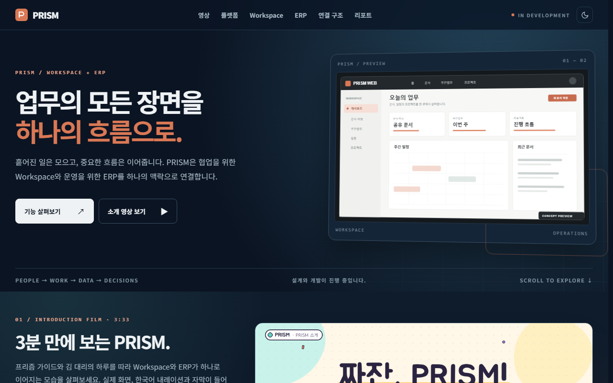
PRISM 사내 플랫폼의 공개 소개 사이트와 한국어 영상 제작 도구. 대본에서 음성·영상·자막까지 제작합니다.
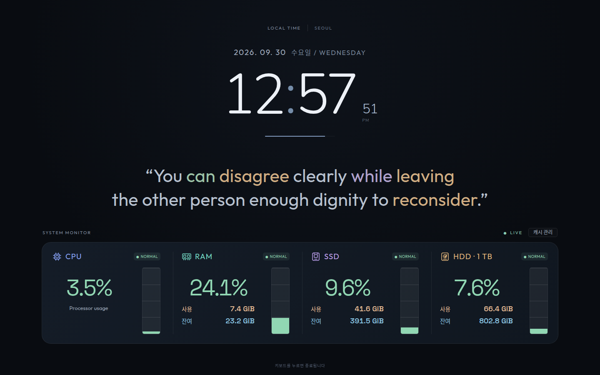
CPU·메모리·디스크 사용량, 시계와 영어 문구를 표시하는 Ubuntu 화면 보호기. 시스템 상태를 한눈에 확인합니다.
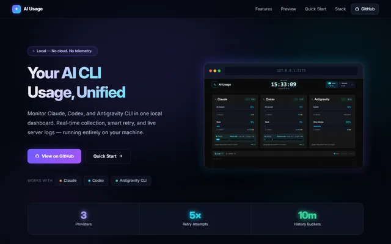
Claude·Codex·Gemini CLI 사용량을 한 화면에서 보는 로컬 대시보드. 클라우드 전송·텔레메트리 없음.
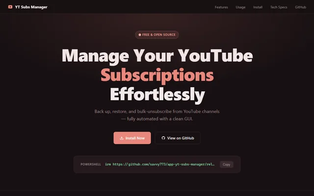
Flet + Playwright 기반 유튜브 구독 정리 앱. 채널 목록·구독 관리를 데스크톱 UI로 처리.
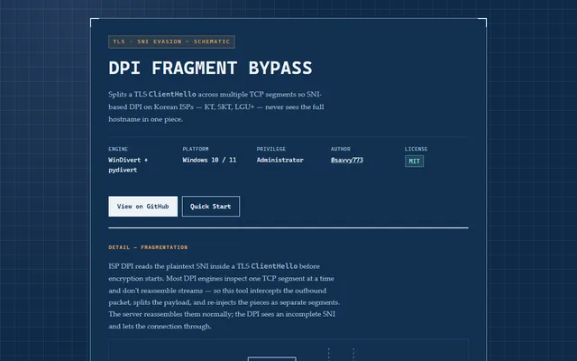
TLS ClientHello를 분할해 SNI 기반 DPI 차단을 우회하는 WinDivert 툴. KT·SKT·LGU+ 대응.
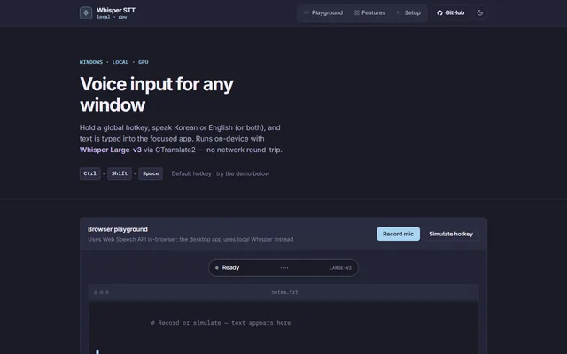
단축키로 어디서든 실시간 받아쓰기하는 온디바이스 STT 유틸. faster-whisper 기반 GPU 추론, 클라우드 전송 없음.
ERP case study · work archive
협업과 운영 데이터를 하나의 흐름으로 연결하기 위해 Workspace + ERP 플랫폼을 처음부터 구축하고 있습니다. 요구사항·데이터 모델 설계, 프론트엔드·백엔드 구현, 배포까지 직접 개발하며 문서·프로젝트·일정과 매출·구매·재고·생산·인사·보고를 연결합니다.
PRISM 공개 소개 보기 ↗업무 자동화와 개발 과정의 기록
SNS 체험단 라이프스타일 리뷰 콘셉트와 소규모 스타트업 서버·인프라 기술 플랜(Plan A/B)을 통합한 소개 페이지.
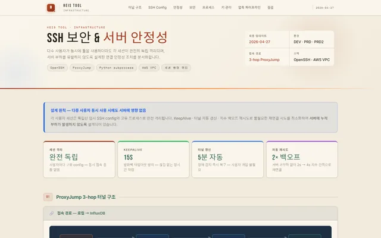
세션별 SSH 터널 완전 격리, 자동 재연결·프로세스 정리 등 HEIS Tool의 보안/안정성을 강화.
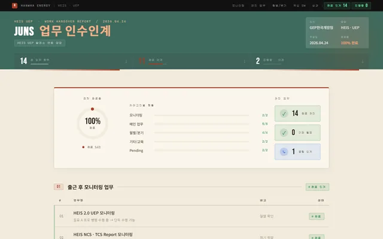
담당 업무 14건 중 11건 완료 인계, 핵심 자동화 SW 3종 후임 이관 (동료 실명은 비공개 처리).
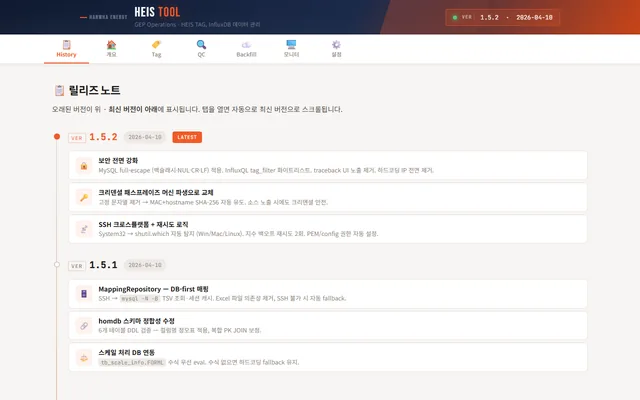
TAG 관리·SQL 등록·QC 검증·Backfill·PVsyst 업로드를 하나로 통합한 자동화 툴로 확장.
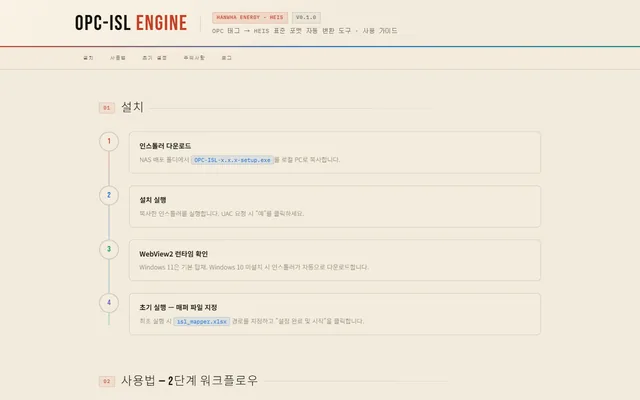
발전소마다 다른 OPC 원본 태그를 HEIS 표준 Import 포맷으로 자동 변환하는 Windows 툴을 개발.